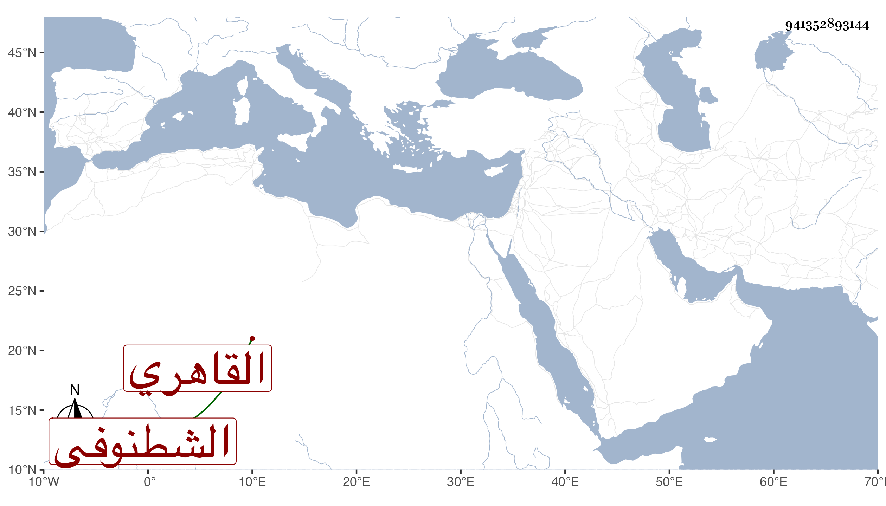

0902Sakhawi.DawLamic.ITO20230111-ara1.EIS1600.941352893144
Biography ID: 941352893144
774
موسى بن عبد الرحمن بن محمد بن عبد الناصر بن علي بن عمر الشطنوفي ثم القاهري والد محمد الماضي . ذكره شيخنا في معجمه فقال الشريف شرف الدين الشاهد الشاعر ذو الشينات . ولد في حدود الأربعين وكان فاضلا شاعرا ينظم الشعر المغسول سمعت منه كثيرا من شعره . ومات في ذي القعدة سنة تسع عشرة وقد سمع معنا على بعض شيوخنا وكان حسن المحاضرة وبينه وبين مرتضى ابن إبراهيم يعني المترجم في معجم شيخنا أيضا معارضات كثيرة فيما يتعلق بعلي ومعاوية فكان هذا يظهر التعصب لمعاوية ليغضب الشريف مرتضى فيقع بينهما ماجريات ظريفة انتهى . وقال في إنبائه كان حسن المحاضرة كثير النادرة وينظم شعرا كثيرا وسطا .
